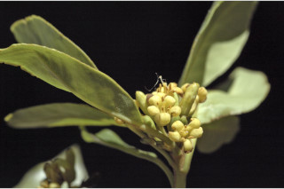
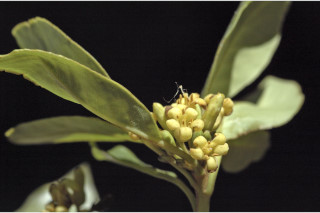

Small trees up to 8 m tall.
8 ಮೀ. ಎತ್ತರದವರೆಗಿನ ಸಣ್ಣ ಗಾತ್ರದ ಮರಗಳು.
Small trees up to 8 m tall.
சிறியமரங்கள் 8 மீ. உயரம் வரை வளரக்கூடியது.
Bark brown, lenticellate, finely fissured; blaze white.
ತೊಗಟೆ ಕಂದು ಬಣ್ಣದಲ್ಲಿದ್ದು,ಸೂಕ್ಷ್ಮವಾದ ಸೀಳಿಕಾ ವಿನ್ಯಾಸ ಹೊಂದಿದ್ದು , ವಾಯುವಿನಿಮಯ ಬೆಂಡು ರಂಧ್ರಗಳ ಸಮೇತವಿರುತ್ತವೆ.
Bark brown, lenticellate, finely fissured; blaze white.
மரத்தின் பட்டை ப்ரவுன் நிறமானது, பட்டைத்துளைகள் (லெண்டிசெல்லேட்) உடையது, மெல்லிய பிளவுகளுடையது; உள்பட்டை வெள்ளை நிறமானது.
Young branchlets terete, pubescent, lenticellate.
ಕಿರುಕೊಂಬೆಗಳು ದುಂಡಾಗಿದ್ದು,ಮೃದು ತುಪ್ಪಳದಿಂದ ಕೂಡಿದ್ದು ವಾಯುವಿನಿಮಯ ಬೆಂಡು ರಂಧ್ರಗಳ ಸಮೇತವಿರುತ್ತವೆ.
Young branchlets terete, pubescent, lenticellate.
சிறியநுனிக்கிளைகள் குறுக்குவெட்டுத் தோற்றத்தில் வளையமானது, உரோமங்களுடையது, பட்டைத்துளைகள் (லெண்டிசெல்லேட்) உடையது.
Leaves simple, alternate, spiral, usually crowded at apex; petiole 1.5-2 cm long, canaliculate, minutely pubescent when young; lamina 5-10 x 2-4 cm, obovate to oblanceolate or narrow elliptic, apex acute to shortly acuminate, sometimes obtuse, base cuneate, margin entire; subcoriaceous, pale beneath, glabrous; midrib slightly canaliculate; secondary_nerves ca. 9 pairs; tertiary_nerves reticulate.
ಎಲೆಗಳು ಸರಳವಾಗಿದ್ದು ಪರ್ಯಾಯ ಮತ್ತು ಸುತ್ತು ಜೋಡನಾ ವ್ಯವಸ್ಥೆಯಲ್ಲಿದ್ದು ಸಾಮಾನ್ಯವಾಗಿ ತುದಿಯಲ್ಲಿ ಗುಂಪಾಗಿರುತ್ತವೆ; ಎಲೆತೊಟ್ಟುಗಳು1.5 – 2 ಸೆಂ.ಮೀ.ವರೆಗಿನ ಉದ್ದವಿದ್ದು, ಕಾಲುವೆಗೆರೆಯನ್ನು ಹೊಂದಿದ್ದು, ಎಳೆಯದಾಗಿದ್ದಾಗ ಸೂಕ್ಷ್ಮ ಮೃದು ತುಪ್ಪಳದಿಂದ ಕೂಡಿರುತ್ತವೆ; ಪತ್ರಗಳು 5 -10 X 2 –4 ಸೆಂ.ಮೀ. ಗಾತ್ರ, ಬುಗುರಿಯ ರೀತಿಯಿಂದ ಬುಗುರಿ-ಭರ್ಜಿಯವರೆಗಿನ ಅಥವಾ ಸಂಕುಚಿತ ಅಂಡವೃತ್ತದ ಆಕಾರ,ಚೂಪಾದುದರಿಂದ ಅಥವಾ ಚಿಕ್ಕ ಗಾತ್ರದ ಕ್ರಮೇಣ ಚೂಪಾಗುವ ಕೆಲವು ವೇಳೆ ಚೂಪಲ್ಲದ ಮಾದರಿಯ ತುದಿ, ಬೆಣೆಯಾಕಾರದ ಬುಡ, ನಯವಾದ ಅಂಚನ್ನು ಹೊಂದಿರುತ್ತವೆ,ಪತ್ರಗಳು ಉಪ-ತೊಗಲನ್ನೋಲುವನ್ನೋಲುವ ರೀತಿಯ ಮೇಲ್ಮೈ,ತೆಳು ಬಣ್ಣದ ತಳಭಾಗವನ್ನು ಹೊಂದಿದ್ದು ರೋಮರಹಿತವಾಗಿರುತ್ತವೆ, ಮಧ್ಯನಾಳ ಕಾಲುವೆ ಗೆರೆಯನ್ನು ಹೊಂದಿರುತ್ತದೆ; ಎರಡನೇ ದರ್ಜೆಯ ನಾಳಗಳು ಅಂದಾಜು 9 ಜೋಡಿಗಳು; ಮೂರನೇ ದರ್ಜೆಯ ನಾಳಗಳು ಜಾಲಬಂಧ ನಾಳ ವಿನ್ಯಾಸದಲ್ಲಿರುತ್ತವೆ.
Leaves simple, alternate, spiral, usually crowded at apex; petiole 1.5-2 cm long, canaliculate, minutely pubescent when young; lamina 5-10 x 2-4 cm, obovate to oblanceolate or narrow elliptic, apex acute to shortly acuminate, sometimes obtuse, base cuneate, margin entire; subcoriaceous, pale beneath, glabrous; midrib slightly canaliculate; secondary_nerves ca. 9 pairs; tertiary_nerves reticulate.
இலைகள் தனித்தவை, மாற்றுஅடுக்கமானவை, சுழல் போல் அமைந்தது, பொரும்பாலும் சிறுகிளைகளின் நுனியில் இலைகள் கூட்டமாக மற்றும் நெருக்கமாக காணப்படும்; இலைக்காம்பு 1.5-2 செ.மீ. நீளமானது, குறுக்குவெட்டுத் தோற்றத்தில் கேனாலிகுலேட், இளம்பருவத்தில் சிறிய உரோமங்களுடையது; இலை அலகு 5-10 X 2-4 செ.மீ., தலைகீழ் முட்டை வடிவானது முதல் தலைகீழ் ஈட்டி வடிவானது அல்லது குறுகிய நீள்வட்ட வடிவானது, அலகின் நுனி கூரியது முதல் சிறிய அதிக்கூரியது, சிலசமயங்களில் மெட்டையானது, அலகின் தளம் ஆப்பு வடிவானது, அலகின் விளிம்பு முழுமையானது; சப்கோரியேசியஸ், அலகின் கீழ்பரப்பு வெளிறியது, உரோமங்களற்றது; மையநரம்பு மேற்புறத்தில் அலகின் பரப்பைவிட சிறிது பள்ளமானது; இரண்டாம் நிலை நரம்புகள் 9 ஜோடிகள்; மூன்றாம் நிலை நரம்புகள் வலைப்பின்னல் போன்றவை.
Inflorescence racemes; flowers cream; pedicel 0.5 cm long.
ಪುಷ್ಪಮಂಜರಿಗಳು ಮಧ್ಯಾಭಿಸರದ ಮಾದರಿಯವು;ಹೂಗಳು ಕೆನೆ ಬಣ್ಣದವು; ತೊಟ್ಟು 0.5 ಸೆಂ.ಮೀ ವರೆಗಿನ ಉದ್ದ ಹೊಂದಿರುತ್ತದೆ.
Inflorescence racemes; flowers cream; pedicel 0.5 cm long.
மஞ்சரி ரெசீம்; மலர்கள் கிரீம் நிறமானது; மலர்காம்பு 0.5 செ.மீ. நீளமானது.
Capsule, 2 valved, ca. 1 cm across; seeds 4.
ಸಂಪುಟ ಫಲ 2 ಕವಾಟಗಳನ್ನು ಹೊಂದಿದ್ದು ಅಂದಾಜು 1 ಸೆಂ.ಮೀ. ಅಡ್ಡಗಲತೆಯನ್ನು ಹೊಂದಿರುತ್ತವೆ; ಬೀಜಗಳು 4.
Capsule, 2 valved, ca. 1 cm across; seeds 4.
வெடிகனி (கேப்சியூல்), 2 அறைகளுடையது, ca. 1 செ.மீ. குறுக்களவுடையது; விதைகள் 4.


 
